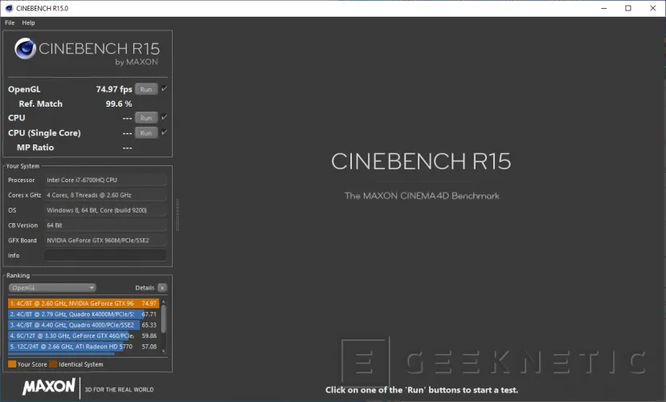
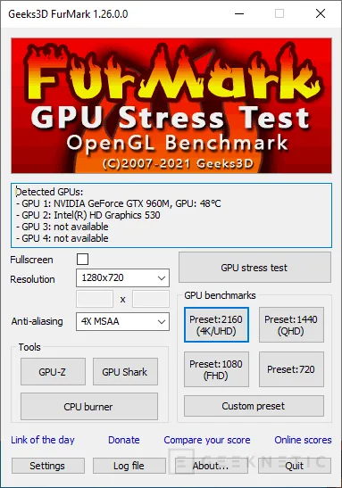
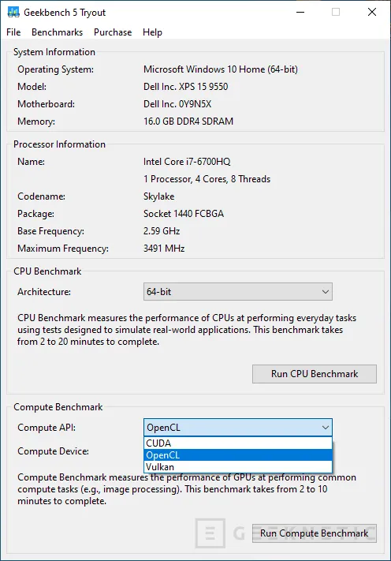
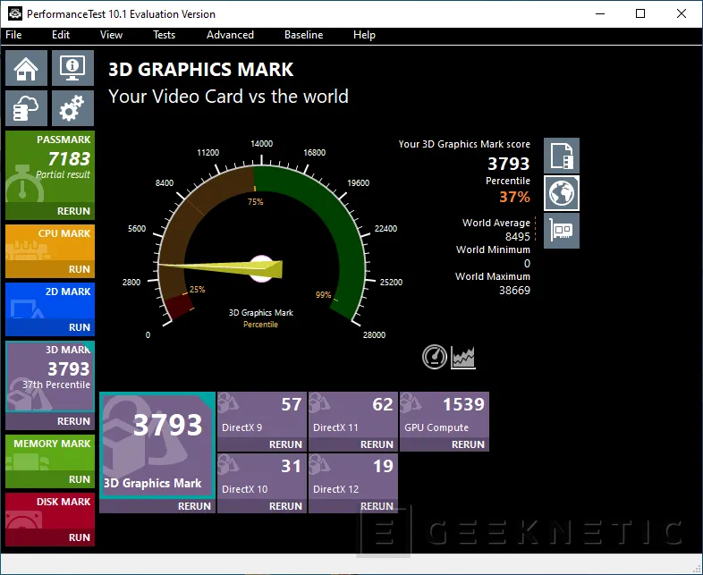
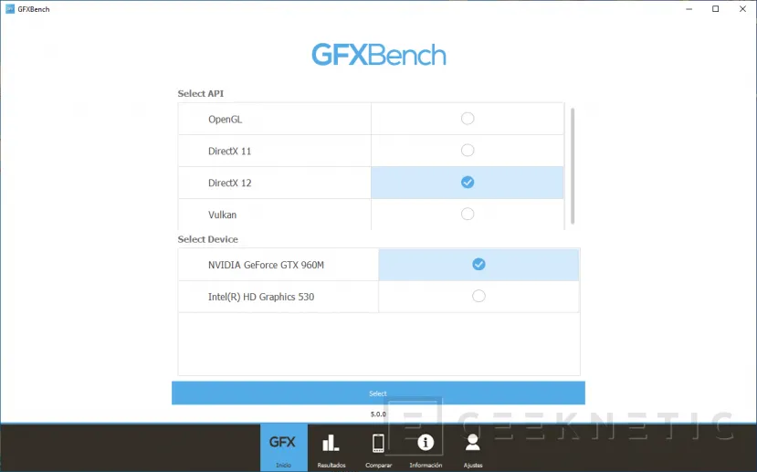
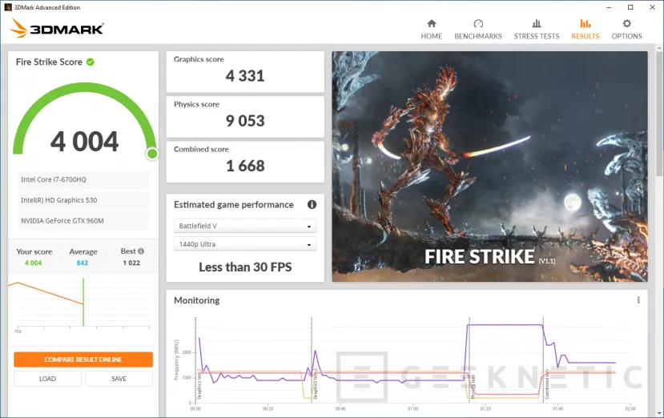

Cómo medir el rendimiento de la GPU o Tarjeta Gráfica
Para evaluar el rendimiento de una tarjeta gráfica es primordial el uso de un benchmark, ya sea mediante algún juego que tenga la herramienta de benchmark incorporada o mediante test sintéticos que estén especializados en algún ámbito en concreto. Habitualmente se suelen combinar ambas herramientas para evaluar el rendimiento de una tarjeta gráfica, ya sea de portátil o de sobremesa, ya que mediante el uso de varios de ellos se complementa la información que obtenemos.
8 mejores benchmarks para tarjetas gráficas
Cinebench R15 ofrece un test para gráficas, aunque las siguientes versiones ya no lo ofrecen. Únicamente hace uso de OpenGL y proporciona una media de FPS durante la prueba, por lo que ante tan poca información no nos queda otra que ponerlo en último lugar. Sí es cierto que, respecto a las últimas versiones, sus benchmarks para CPU son de los más completos y afinados, pero para GPU se quedaron atrás hace ya unos años.
Vamos a poner en esta posición a Furmark . Este benchmark ofrece un alto estrés a la GPU, tanto que desde el programa avisan de que es probable que cause inestabilidades y temperaturas extremas en la gráfica. Al finalizar te ofrece una puntuación junto con datos de monitorización y un pequeño resumen del hardware. Este programa es más para testear la estabilidad frente a overclock y componentes dañados y realmente no ofrece tanta información acerca del rendimiento de la GPU como el resto de programas que pondremos a continuación.
Geekbench 5 quizá sea más conocido por sus test para CPU. Sobre todo se conoce mucho en smartphones y, a menudo, aparecen filtraciones de nuevos SoCs a través de este benchmark. Sin embargo, cuenta con utilidades para probar la potencia gráfica en OpenCL, CUDA y Vulkan, no de manera simultánea, pero se pueden realizar las tres pruebas de seguido sin problema alguno.
Por su parte, Passmark es un test bastante más completo que los anteriores pero peca en una cosa: mantiene una versión de prueba de 30 días. Además, los test que realiza son bastante cortos, aunque ofrece resultados para DirectX 9, 10, 11, 12 y capacidad de cálculo de la GPU. Este benchmark es bastante completo, además posee herramientas para probar también en 2D, RAM, unidad de almacenamiento y CPU.
En primer lugar colocamos a 3DMark Time Spy, un completo benchmark y bastante actualizado que se ejecuta bajo DirectX 12. Como en los últimos que hemos ido comentando, en Time Spy tampoco faltan pantallas y escenarios variados, además de incluir uno único para probar la CPU por sí sola. Tiene una versión Extreme pensada para equipos de alto rendimiento, donde se renderiza a 4K y se añaden más efectos.

En segundo lugar queda Unigine Superposition, un benchmark que se ejecuta bajo DirectX 12 y que tiene buena duración, además de ejecutar diferentes escenarios. Pone a prueba físicas, sombras, reflejos, iluminación, partículas… es bastante completo y, como en los otros dos benchmarks de Unigine, al final obtienes los FPS mínimos, máximos y una media. También indica la temperatura máxima de la GPU, un dato a tener en cuenta de cara a evaluar si podemos o no realizar overclock.

GFXBench ofrece pruebas de rendimiento para gráficas bajo las API DirectX 11, 12, OpenGL y Vulkan, aunque habrá que ejecutarlas una a una. Cada una de ellas pasa por varios escenarios donde se trata de dar una idea global bastante acertada del rendimiento gráfico. Además, puedes seleccionar qué pruebas se ejecutarán. Al final lo que obtienes es una media de los FPS durante cada prueba
3DMark FireStrike es un viejo conocido, utilizado a menudo para batir récords mundiales y suele ser un buen indicador del rendimiento gráfico. El test dura unos minutos y pasa por diferentes pantallas, donde se intenta tener una visión más general del rendimiento real. Además, prueba la CPU al mismo tiempo que la GPU y una de esas pantallas es exclusiva para calcular físicas mediante el procesador.
